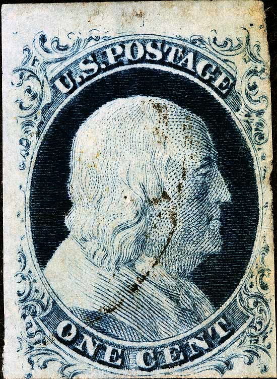
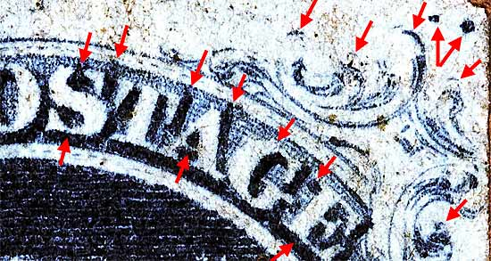
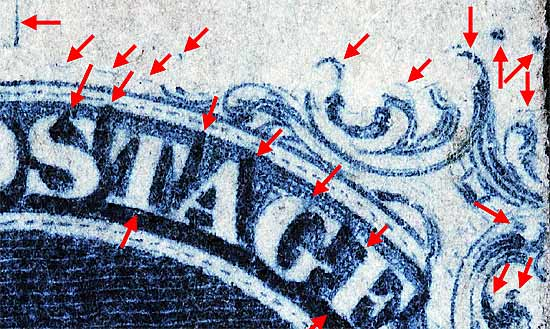
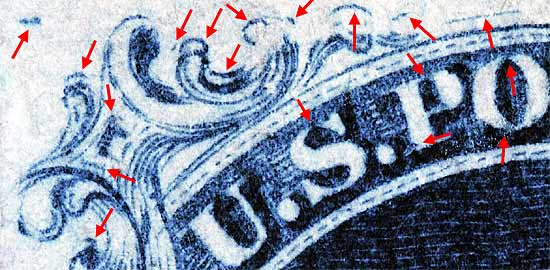
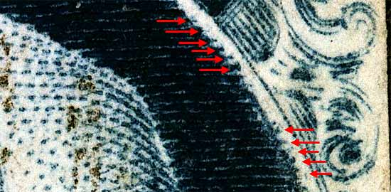
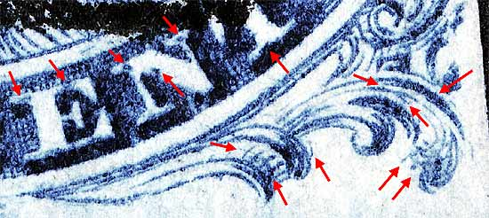
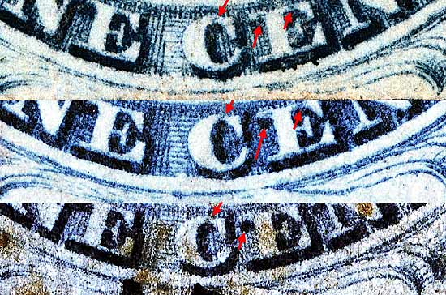
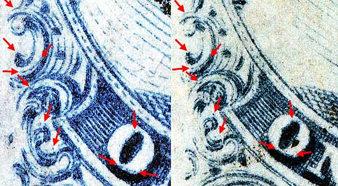

1¢ Franklin Issue of 1851-1857, PLATE 1 LATE. Pos 4R1L, (Scott #7) |
| Scott #7 Blue, Type II, Relief T Issued both imperforate and perforated. Perforated copies are more scarce. DOUBLE TRANSFER The only position on Plate 1 Late that was not recut. |
| Courtesy of Dennis Rice
 |
| Figure 1. (Below) Red arrows point to consistent plating marks found in the upper right margin and are indicated on Ashbrook/Neinken plating diagrams. The 2 GUIDE DOTS are clearly seen.
 Figure 1a. (Below) The vertical line above the "O" and "S" of POSTAGE is not shown on the Ashbrook/Neinken plating diagrams.  |
| Figure 2. (Below) Red arrows point to consistent plating marks found in the upper left margin and are indicated on Ashbrook/Neinken plating diagrams.
 |
| Figure 3. (Below) Red arrows point to marks created when the image from the roller was reentered onto the plate and was slightly shifted to the left. The resulting double transfer is created because the original image was not completely erased before the new one was applied and the relief roller was slightly misaligned.
 |
| Figure 4. (Below) More plating marks in the lower right corner.
 |
| Figure 5. (Below) Note that the lower curved line (under the "C" and "E" of CENT.) has not been recut. The lack of any recut lines is why this position is a Type II.
 |
| Figure 6. (Below) Plating marks per the Ashbrook/Neinken plating drawings. The actual plating marks are fainter than the drawings show, but can still be seen here.
 |
| DISCLAIMER and COPYRIGHT INFORMATION: Thanks for visiting this site. I hope you learn something new as we are making new discoveries all the time. You, the visitor, have my permission to link to my pages and to share the INFORMATION with others. The images themselves fall under the fair use guidelines established by the United States Congress and Copyright law. Basically contact us before using. I also ask in return that you send me an e-mail if I have made a mistake, or have made some other technical blunder that in my rush to put these pages up would cause the visitor confusion. Please also visit my other website at www.slingshotvenus.com. and support the live music arts. While your there, be sure to purchase our music. There are not many philatelic rock stars around and we need all the help we can get. :-) I can be reached at: nerdman@ix.netcom.com |